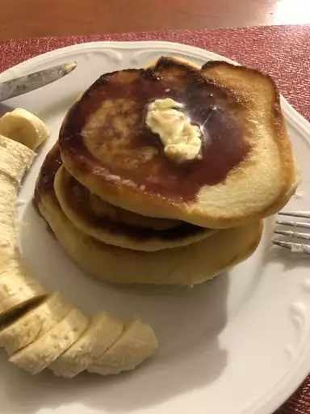

Pancakes

Description
These lemon ricotta pancakes are lovely served with a pat of butter,
a pinch of lemon zest, and a drizzle of maple syrup. If these pancakes
were any lighter, they would float off the plate — and I didn't even
separate the eggs and whip the whites.
Also, I used water instead of milk; I liked them better this way.
Ingredients
- ¾ cup cold water or milk
- ½ teaspoon baking soda
- ½ cup ricotta cheese
- 1 large egg
- 1 tablespoon grated lemon zest (just the yellow part of the skin)
- 1 tablespoon vegetable oil
- 1 tablespoon white sugar
- ⅛ teaspoon vanilla extract
- 1 cup self-rising flour
- 2 tablespoons melted butter
- 1 tablespoon lemon juice
Steps
-
Whisk together cold water and baking soda in a mixing bowl.
Add ricotta cheese, egg, lemon zest, vegetable oil, sugar, and
vanilla; whisk until smooth, breaking up lumps of cheese as you mix.
-
Whisk in 1 cup plus 2 tablespoons self-rising flour, melted butter,
and lemon juice until most of flour disappears into batter.
Let batter sit at room temperature for 15 minutes.
-
Heat a lightly oiled griddle over medium-high heat.
-
Drop batter by large spoonfuls onto the hot griddle and cook until
bubbles form and the edges are dry, 2 to 3 minutes.
Flip and cook until browned on the other side, 2 to 3 minutes.
Repeat with remaining batter.